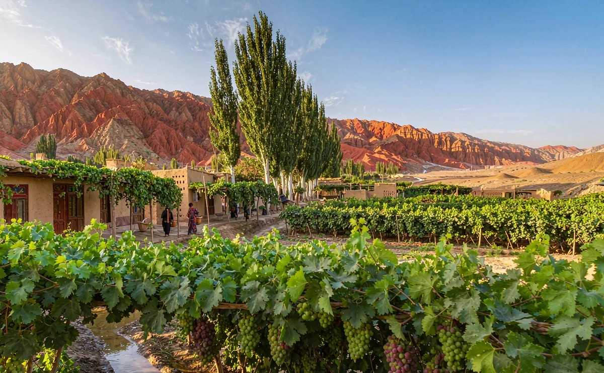

季節
季節
City walk
在火洲，跟著綠蔭走
吐魯番的關鍵不是跑多少點，而是幾點出門。把正午留給陰影，城市才會好看。
路線一覽
夏季白天可超過 40°C，這條動線刻意把 12:00–16:00 留白。其他季節可把午休縮短，多排一站。
- 09:00–11:00 老城與高昌路
- 11:00–12:00 蘇公塔
- 12:00–16:00 午休／室內
- 16:00–18:00 坎兒井民俗園
- 傍晚 葡萄溝綠洲
- 晚餐 夜市
第一站：老城與高昌路（09:00–11:00）
土黃色的牆、雕花木門與晾房，是吐魯番最日常的顏色。早上氣溫還沒上來，光線斜、影子長，最好拍也最好走。
- 必逛：老城巷弄、手工藝小店、葡萄乾與堅果舖
- 拍照前先徵詢居民
- 巷道遮蔭多，比大馬路舒服
第二站：蘇公塔（11:00–12:00）
額敏塔（蘇公塔）是清代留下的磚砌高塔，幾何砌紋在強光下特別立體。停留不需太久，但它是理解這座綠洲城市伊斯蘭建築最好的一課。
高溫提醒：正午請回飯店休息或找室內空間。我們排吐魯番行程時，一定把這段留白寫進去，不用硬撐。
第三站：坎兒井民俗園（16:00–18:00）
坎兒井是靠地下渠道把天山融雪引到綠洲的灌溉系統，沒有它就没有吐魯番的葡萄。園區有地下渠道可走，夏天進去明顯涼一截，是兼顧知識與避暑的一站。
第四站：葡萄溝綠洲（傍晚）
一串串葡萄架把整條溝遮成綠色隧道，傍晚光線穿過葉子，溫度也降下來。可順道安排維吾爾人家訪，喝茶、聽一段木卡姆。
- 葡萄季約 7–9 月，品種與甜度依月份不同
- 人家訪需事先預約，並先說明飲食忌口
- 交河故城建議另排半天，別和這條市區路線硬擠
第五站：夜市（晚餐）
拌麵、烤肉、烤包子與冰鎮酸奶，配上入夜後終於降下來的風。吐魯番的一天，通常是從太陽下山才真正開始。
實用資訊
- 溫度：夏季極熱，防曬、遮陽帽與水壺必備
- 服裝：進宗教場所衣著端莊，拍照先問
- 交通：景點分散，包車比自行轉乘省時許多
- 時差：用北京時間但作息晚，晚餐與夜市入夜才熱鬧
吐魯番，絲路與火洲的交會。它在多數北疆大環線的尾端，回烏魯木齊約 190–200 公里、2.5–3 小時，剛好銜接返程航班。